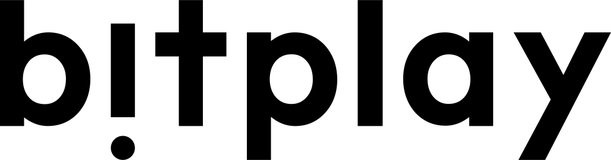
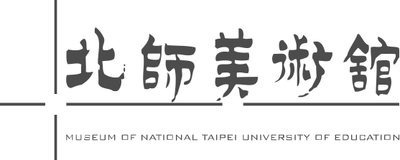
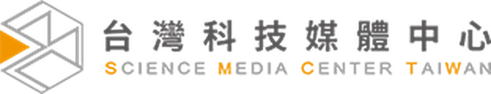

案號 SOSL115010 ｜ 服務建議書簡報
宜蘭縣育兒資源網 2.0
以兒童為核心
以自動化減輕承辦負擔
以資安守護親子個資
宜蘭縣育兒資源網 2.0 ｜ 服務建議書
關於竑盛 CTK Pro
報名流程、會員綁定、資訊安全 —
本案要的，正是我們最熟的
CTK Pro ｜ 竑盛科技
15 年數位開發、70+ 網站長期維運。 我們不只做版面，而是把報名、審核、會員與資安整合成可長期維運、可交接的系統。
服務政府單位 · 上市櫃企業 · 教育機構
會議報名與流程
熟悉活動報名、審核、報到流程設計，對應本案報名報到。
會員綁定流程
大型會員資料與主鍵綁定實戰，對應一童一號重構。
資安與無障礙
ISO 27001:2022 驗證、無障礙 A 級檢測。
雲端與長期維運
Cloudways 台灣官方夥伴；文件、原碼、訓練完整交接。
關於竑盛 CTK Pro
公司可信度
政府與上市櫃，都放心交付
橫跨政府、教育與企業，從複雜報名系統、大型會員資料重建到資訊整合 —— 多元產業實際驗證的交付實力。
行政院
ASUS
法雅客
FNAC
FNAC

bitplay91APP

北師美術館肯園
寬庭
EVERYDAY
OBJECT
OBJECT
Inteplast
海外聯招會

新興科技媒體中心
台灣鼻科
醫學會
醫學會
G-Plus
非常木蘭
西園醫院
永越健康
管理中心
管理中心
淨毒五郎
報名／會員／資料整合系統
政府 · 教育 · 企業
ISO 27001:2022
公司可信度 ｜ 客戶實績
為什麼是竑盛
三項明確的選擇理由
1ISO 27001:2022 已驗證
不是「導入中」或「規劃中」，而是實際通過國際認證，中小型廠商罕見，直接對應本案兒童個資保護要求。
證號 ARES／TW／I2502021I
2關鍵實戰已驗證
會員找回認領（法雅客逾十萬會員）與複雜報名報到（TAP 平台），本案兩大技術核心皆有成熟實務，非首次摸索。
對應資料移轉與報名報到
3長期維運不斷鏈
模組化設計、不綁專屬技術；文件、原始碼與教育訓練完整交付，保固期滿後機關可自主選擇，降低斷鏈風險。
含上線後一年保固維護
為什麼是竑盛 CTK Pro
讓每個孩子
都排到自己的位置
讓承辦少加班，讓家長更便利

ctkpro.com掃描了解更多
按 Q 開啟常見問答備詢